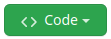
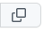

Clonando um repositório¶
Uma vez que você tenha criado um novo repositório, você poderá cloná-lo para a sua máquina local. O ato de clonar cria uma cópia do repositório remoto no seu computador. Apesar do GitHub oferecer algumas ferramentas de manipulação de arquivos na sua interface Web (por exemplo, é possível adicionar, remover e modificar arquivos), geralmente, quando estamos trabalhando com código-fonte, queremos executá-lo (e.g. compilá-lo) para ver o resultado.
Na tela inicial do seu repositório recém-criado, clique no botão , e copie a URL do repositório clicando no botão :
{kind=link}
{kind=link}
{kind=link}
Abra a linha de comando do seu sistema operacional, e, na pasta que você quiser clonar o repositório, digite
git clone <URL>
Onde <URL> é a URL do seu repositório, copiada anteriormente. Por exemplo, para clonar o repositório deste manual,
digite
git clone https://github.com/CTISM-Prof-Henry/gitEssentials.git
É possível clonar qualquer repositório, inclusive repositórios que não são seus! Tenha em mente apenas que, ao clonar um repositório que não é seu, você não poderá enviar modificações para o repositório remoto.
Após clonar um repositório, é possível trabalhar nele localmente, utilizando git. Apesar do git possuir muitos comandos, veremos na próxima seção o conjunto mínimo de comandos para começar a versionar nosso código-fonte.